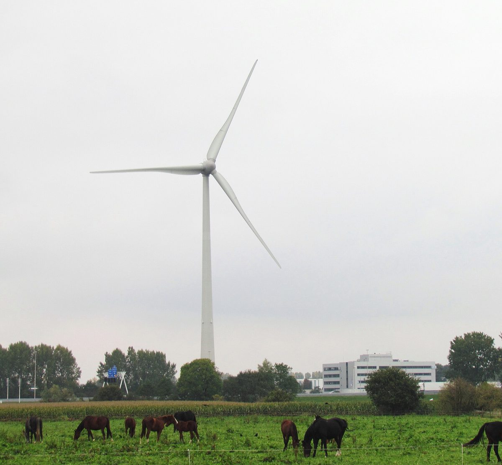

네덜란드 데벤터르 A1 풍력 4기 첫 주민설명회…에너지협동조합 '지역 소유' 내세웠지만 이웃 주민 반발

데벤터르에너지·로험에너지 협동조합과 퓌어 에네르지·에네코가 날개 끝 높이 280m 발전기 4기 추진…추진 측 연 6만 유로 주민기금 설명에 반대 단체는 출자 수익과 소음 피해가 따로 논다고 맞서
네덜란드 오버레이설주 데벤터르에서 에너지협동조합 두 곳이 에너지 회사와 함께 추진하는 '데벤터르 A1 풍력단지'의 첫 주민설명회가 10월 29일 콜름스하터의 익튀스 교회에서 열려 찬성·반대 주민이 한자리에 모였다. 계획은 A1 고속도로 북쪽과 남쪽에 2기씩, 날개 끝 높이 280m의 대형 풍력발전기 4기를 세우는 것으로, 에너지협동조합 데벤터르에너지(Deventer Energie)·로험에너지(LochemEnergie)와 에너지 회사 퓌어 에네르지(Pure Energie)·에네코(Eneco)가 손을 잡았다. 오버레이설주가 계획을 공식 절차에 올리면서 추진 측이 비용을 댄 조사 단계가 시작됐으며, 조사에 약 1년, 건설까지 전체 절차에는 6~8년이 걸릴 수 있다. 로험에너지의 밥 다윈담(Bob Duindam) 대표는 15년 동안 재생에너지와 지역 소유에 힘써 왔다며 4기가 들어서면 주민기금을 만들어 해마다 6만 유로를 마을회관·놀이터 같은 주변 사회 사업에 쓸 수 있다고 설명했지만, 이웃 주민들은 그런 일은 원래 시가 할 일이고 피해를 겪는 사람에게 바로 돌아가지도 않는다고 반박했다. 반대 단체 '데벤터르 빈트(Deventer Wint)'는 설명회장 입구에서 반대 전단을 나눠 주며 멀리 사는 주민도 출자해 수익을 나눌 수 있지만 소음과 그림자 깜빡임은 가까운 주민이 떠안는다고 지적했고, 반경 2.5km 안 주택 9,000채의 값이 8.6% 떨어질 수 있다는 자체 계산을 내놨다(추진 측은 하락 폭을 '몇 %' 수준으로 본다). 엡서-요퍼 마을의회의 마레이커 판 데 헴(Marijke van de Hem) 의장은 "우리는 풍력에 반대하지 않는다"면서도 가장 서쪽 발전기가 엡서 마을에 너무 가깝다고 했으며, 한 주민이 계산 도구로 따져 보니 집에서 가장 가까운 발전기까지 484m로 논의 중인 전국 기준 초안(날개 끝 높이의 2배, 이 경우 560m)보다 짧았다고 밝혔다.
시민에너지 관점
해마다 6만 유로를 마을 사업에 쓰겠다는 약속보다 반경 2.5km 안 9,000채 주민의 불안이 더 크게 들리는 것은, 협동조합이 사업 주체여도 출자 수익을 받는 사람과 소음·그림자를 견디는 사람이 서로 다를 수 있기 때문이다. 협동조합이 끼면 주민 수용성은 저절로 풀린다는 기대가 있지만, 이번 설명회는 출자 기회만으로는 '의견을 듣는 것'과 '함께 결정하는 것'의 간극을 메우지 못한다는 점을 보여 준다. 지역 소유가 답이 되려면 발전기 가까이 사는 주민에게 출자 우선권과 더 큰 몫을 주고, 주민기금의 쓰임새와 발전기 위치 같은 핵심 결정을 그 주민들이 함께 정하는 구조까지 갖춰야 한다. 국내 풍력·태양광 이익공유 제도도 거리에 따른 주민 몫과 결정권을 조사 단계부터 설계에 담아야 한다.
출처: Berkelbode 2026-10-30 기자 미표기 원문 보기
オランダ・デーフェンターのA1風力4基で初の住民説明会…エネルギー協同組合が「地域所有」を掲げるも近隣住民が反発
協同組合デーフェンター・エネルギーとロッヘムエネルギーがピュア・エネルギー、エネコと翼端高280mの風車4基を計画…推進側の年6万ユーロの住民基金の説明に、反対団体は出資の利益と騒音被害が切り離されていると反論
オランダ・オーファーアイセル州デーフェンターで、二つのエネルギー協同組合がエネルギー会社と共に進める「デーフェンターA1風力発電所」の初の住民説明会が10月29日、コルムスハーテのイクテュス教会で開かれ、賛成・反対の住民が集まった。計画はA1高速道路の北側と南側に2基ずつ、翼端高280mの大型風車4基を建てるもので、エネルギー協同組合のデーフェンター・エネルギー（Deventer Energie）とロッヘムエネルギー（LochemEnergie）に、エネルギー会社のピュア・エネルギー（Pure Energie）とエネコ（Eneco）が加わる。オーファーアイセル州が計画を正式な手続きに乗せたことで、推進側が費用を確保した調査段階が始まり、調査に約1年、建設までの手続き全体には6〜8年かかる可能性がある。ロッヘムエネルギーのボブ・ダウンダム（Bob Duindam）代表は、15年にわたり再生可能エネルギーと地域所有に取り組んできたと述べ、4基が建てば住民基金をつくり、毎年6万ユーロを集会所や遊び場など周辺の社会事業に充てられると説明したが、近隣住民はそれは本来市がすべきことで、被害を受ける人に直接は届かないと反論した。反対団体「デーフェンター・ヴィント（Deventer Wint）」は会場の入口で反対のチラシを配り、遠くに住む住民も出資して利益を分け合えるが、騒音や影のちらつきは近くの住民が負うと指摘し、半径2.5km以内の住宅9,000戸の価値が8.6%下がりうるとする独自の試算を示した（推進側は下落幅を「数%」程度とみる）。エプセ・ヨッペ村議会のマレイケ・ファン・デ・ヘム（Marijke van de Hem）議長は「私たちは風力に反対しているわけではない」としながらも、最も西側の風車がエプセの村に近すぎると述べ、ある住民が計算ツールで調べたところ自宅から最も近い風車まで484mで、議論中の全国基準案（翼端高の2倍、この場合560m）より短かったと明らかにした。
市民エネルギーの視点
毎年6万ユーロを地域の事業に充てるという約束よりも、半径2.5km以内の9,000戸の住民の不安のほうが大きく響くのは、協同組合が事業主体であっても、出資の利益を受け取る人と騒音や影に耐える人が別々になりうるからだ。協同組合が加われば住民の受容性はおのずと解決するという期待もあるが、今回の説明会は、出資の機会だけでは「意見を聞くこと」と「共に決めること」の溝を埋められないことを示している。地域所有が答えになるには、風車の近くに住む住民に出資の優先権とより大きな取り分を与え、住民基金の使い道や風車の位置といった核心的な決定をその住民たちが共に決める仕組みまで備えなければならない。韓国の風力・太陽光の利益共有制度も、距離に応じた住民の取り分と決定権を調査段階から設計に盛り込むべきだ。
出典: Berkelbode 2026-10-30 記者名なし 原文を読む
荷兰代芬特尔A1风电4台机组首场居民说明会…能源合作社打出本地所有旗号，邻近居民仍然反对
代芬特尔能源与洛赫姆能源两家合作社携手Pure Energie、Eneco规划叶尖高度280米的风机4台…推进方介绍每年6万欧元居民基金，反对团体则称出资收益与噪音受害相互脱节
荷兰上艾瑟尔省代芬特尔，两家能源合作社与能源企业共同推进的"代芬特尔A1风电场"10月29日在科尔姆斯哈特的伊赫图斯教堂举行首场居民说明会，支持和反对的居民齐聚一堂。按照计划，将在A1高速公路南北两侧各建2台、共4台叶尖高度280米的大型风力发电机，由能源合作社代芬特尔能源（Deventer Energie）、洛赫姆能源（LochemEnergie）与能源企业Pure Energie、Eneco共同推进。上艾瑟尔省已将该计划纳入正式程序，由推进方出资的调查阶段随之启动，调查约需1年，到建成为止的整个程序可能需要6至8年。洛赫姆能源负责人鲍勃·道因达姆（Bob Duindam）表示，合作社15年来一直致力于可再生能源和本地所有，4台风机建成后将设立居民基金，每年可拿出6万欧元用于社区活动中心、游乐场等周边社会项目；但邻近居民反驳说，这些本来就是市政府该做的事，也不会直接惠及受影响的人。反对团体"代芬特尔风"（Deventer Wint）在会场入口散发反对传单，指出住得远的居民也能出资分享收益，噪音和阴影闪烁却由附近居民承担，并提出自行测算称，半径2.5公里内9,000套住宅的价值可能下跌8.6%（推进方认为跌幅只有"几个百分点"）。埃普瑟-约珀村议会主席马赖克·范德黑姆（Marijke van de Hem）说"我们并不反对风电"，但认为最西侧的风机离埃普瑟村太近；她还透露，一位居民用计算工具测算后发现，自家到最近一台风机只有484米，短于正在讨论的全国标准草案（叶尖高度的2倍，此处为560米）。
市民能源视角
比起每年拿出6万欧元做社区项目的承诺，半径2.5公里内9,000户居民的不安显得更响亮，原因在于即便合作社是项目主体，领取出资收益的人和忍受噪音、阴影的人也可能不是同一群人。有人期待只要有合作社参与，居民接受度问题就会迎刃而解，但这场说明会表明，仅靠出资机会，填补不了"听取意见"与"共同决定"之间的鸿沟。本地所有要真正成为答案，就必须给风机附近的居民出资优先权和更大份额，并让这些居民共同决定居民基金的用途、风机位置等核心事项。韩国的风电和光伏收益共享制度，也应从调查阶段起就把按距离分配的居民份额和决定权纳入设计。
来源: Berkelbode 2026-10-30 未署名 查看原文
First public meeting on four-turbine Deventer A1 wind farm in the Netherlands…energy co-ops tout local ownership, but neighbours push back
Co-ops Deventer Energie and LochemEnergie plan four 280m-tip-height turbines with Pure Energie and Eneco; promoters point to a 60,000-euro-a-year community fund, opponents say investment returns and noise burdens fall on different people
Supporters and opponents turned out on October 29 at the Ichthus church in Colmschate for the first public meeting on the Deventer A1 wind farm, a project that two energy cooperatives are pursuing with energy companies in Deventer, in the Dutch province of Overijssel. The plan is to build four large turbines with a tip height of 280m, two on each side of the A1 motorway, as a joint venture of the energy cooperatives Deventer Energie and LochemEnergie and the energy companies Pure Energie and Eneco. Overijssel has formally taken the plan into procedure, opening a study phase that the promoters have already funded; the studies are expected to take about a year, and the whole process up to construction could take six to eight years. Bob Duindam, director of LochemEnergie, said the cooperative had worked for 15 years on renewable energy and local ownership, and that once the four turbines are built a community fund could channel 60,000 euros a year into local social projects such as a community centre or playgrounds, but neighbours countered that such things are the municipality's job and do not go directly to the people who bear the nuisance. The opposition group Deventer Wint handed out leaflets at the entrance, arguing that residents living far away can invest and share in the profits while those nearby are left with the noise and shadow flicker, and presented its own calculation that 9,000 homes within a 2.5km radius could lose 8.6% of their value (the promoters put the potential drop at "a few percent"). Marijke van de Hem, chair of the Epse-Joppe village council, said "we are not against wind energy" but that the westernmost turbines would be too close to Epse, adding that one resident who used an online calculator found the nearest turbine would stand 484m from their home, short of the draft national standard under discussion of twice the tip height, or 560m in this case.
Citizen Energy View
The unease of the 9,000 households within 2.5km is drowning out the promise of 60,000 euros a year for local projects because, even when a cooperative leads a project, the people who collect investment returns and the people who live with the noise and shadows may not be the same. Some expect that bringing in a cooperative will settle local acceptance on its own, but this meeting shows that an opportunity to invest does not by itself close the gap between being consulted and deciding together. For local ownership to be the answer, residents living closest to the turbines need priority and a larger share in the investment, and a structure in which they jointly decide key questions such as how the community fund is spent and where the turbines go. Korea's benefit-sharing rules for wind and solar should likewise build distance-based shares and decision rights for residents into projects from the study phase onward.
Source: Berkelbode 2026-10-30 No byline Read the original